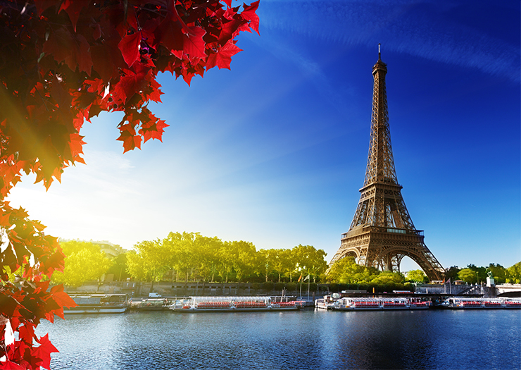
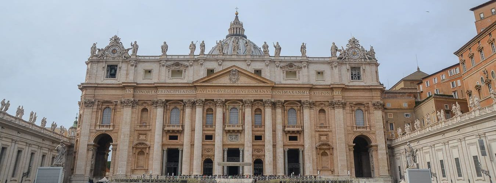

Torre Eiffel

A Torre Eiffel foi construída para o evento “Exibição Universal” (Exposition Universelle) que ocorreu em 1889 em Paris. O evento foi realizado no centenário da Revolução Francesa (1789). Por meio de uma competição desenvolvida pelo governo francês, diversos engenheiros e arquitetos apresentaram seus projetos.
Coliseu

O Coliseu de Roma foi construído entre 72 d.C e 80 d.C. Iniciado por Vespasiano (69 a 79 d.C.), mais tarde foi inaugurado por Tito (79 a 81 d.C.), embora apenas tivesse sido finalizado poucos anos depois. Empresa colossal, este edifício, inicialmente, poderia sustentar no seu interior cerca de 50 000 espectadores, em três andares. Durante o reinado de Alexandre Severo e Gordiano III, foi ampliado com um quarto andar, podendo abrigar então cerca de 90 000 espectadores. Finalmente foi concluído por Domiciano (81 a 96 d.C.), filho de Vespasiano e irmão mais novo de Tito.
Basílica de São Pedro

A Basílica de São Pedro é uma basílica no Estado do Vaticano. Trata-se do maior e mais importante edifício religioso do catolicismo e um dos locais cristãos mais visitados do mundo. Cobre uma área de 23 000 m² ou 2,3 hectares e pode albergar mais de 60 mil devotos